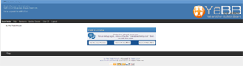

Upgrading from YaBB 2.x

If you are upgrading your existing YaBB 2 installation, there are a few simple steps that need to be taken in order to correctly complete the process. Before you begin, however, make sure you have a full backup of your working YaBB. It is also advisable to inform your users that you will be upgrading before you begin.Make note of which mods that may have been added by checking Admin Center -> Installed Mods. 2.7 comes with Advanced Banning, Advanced Detailed Version Check, Advanced Backup, Style Switcher, Print Post Permissions, Advanced PM Minimum Posts, ErrorLog Security, ViewProfile Intercept, E-Mail Settings Check, Fix Board Dupes, CP from Admin Center, and YaBMod Mod installer as part of the core. If you have any of these installed on your old forum, they do not need to be reinstalled. Any other mods will need to be reinstalled once you have finished upgrading your board. Note that 2.4/2.5AE/2.5.2 mods are not compatible with 2.7. Editing will need to be done.
As soon as you are ready, place your existing forum into maintenance mode. Go to the Admin Center, scroll down the left side Menu, click on "Maintenance Settings", check "Maintenance Mode?" and save the change.
Upgrading
- You will need to install a completely new version of YaBB 2.7 forum first!
- Go to the Installation section of this Quick Guide and follow all steps up through "Step 4 - Setting Up", including point 5 (which has you run the Setup program on the new forum). Then return here to the next step below.
- Your NEW forum is already in Maintenance Mode now, leave it that way while you complete the following steps.
- Be sure your OLD forum is in Maintenance Mode too.
Versions 2.2 and later are described above, versions 2.1 and earlier, the Maintenance Mode setting is at the top of the Forum Configuration/Forum Settings page. - If your old forum is older than 2.6 and had 'Board password', 'Board Rules', or any other mod that directly altered the function of the Boards of your Forum you must install BoardConvert.pl into the yabb2 directory of your OLD forum, CHMod it to 755 and run it. It will create the conversion data necessary to properly import your Board settings into 2.7. Since the conversion data file is created in in the Variables folder of your OLD forum, it will be one of the files you will need to copy into the Convert/Variables folder in the next step if your old forum IS NOT in the same cgi-bin as your new 2.7 install.
- If your old forum is using Russian or another 'windows-1251' encoded Language Pack, you must copy LangConvert.pl into the yabb2 directory of your OLD forum, CHMod it to 755 and run it. LangConvert will create a list of users using Russian as their chosen language. This list will be needed during the conversion of Messages, Member data, Board data and Variables to UFT-8 encoding. Since the list is created in in the Variables folder of your OLD forum, it will be one of the files you will need to copy into the Convert/Variables folder in the next step if your old forum IS NOT in the same cgi-bin as your new 2.7 install.
- Copy these files into your new YaBB 2.7 installation:
- oldforum/yabbfiles/Attachments/* (all files) copy to newforum/yabbfiles/Attachments/* (all files)
Note: depending on the installation 'yabbfiles' might be 'public_html/yabbfiles' - oldforum/yabbfiles/avatars/UserAvatars/* (all files) copy to newforum/yabbfiles/avatars/UserAvatars/* (all files)
- oldforum/yabbfiles/Attachments/* (all files) copy to newforum/yabbfiles/Attachments/* (all files)
- If your YaBB 2 forum is NOT located on the same server as your YaBB 2.7 installation or you do not know the server path to your of your old YaBB install you will also need to copy:
- oldforum/cgi-bin/yabb2/Boards/* (all files) copy to newforum/cgi-bin/yabb2/Convert/Boards/* (all files)
- oldforum/cgi-bin/yabb2/Members/* (all files) copy to newforum/cgi-bin/yabb2/Convert/Members/* (all files)
- oldforum/cgi-bin/yabb2/Messages/* (all files) copy to newforum/cgi-bin/yabb2/Convert/Messages/* (all files)
- oldforum/cgi-bin/yabb2/Variables/* (all files) copy to newforum/cgi-bin/yabb2/Convert/Variables/* (all files)
- Note:
2.7 has many differences from all previous versions. Even 2.6.11/2.6.12 forums need to run through the 2x conversion.
If your forum is very large it may take a long time to copy all the files from the four folders above. In this case it may be easier to just move the old folders from your old forum to the convert folders in your new forum. - Make sure you have a backup of your old forum files and folders. - If you have any special template files, you may wish to upload those files also, but they will need modification before they will work properly with YaBB 2.7.
If you are upgrading from a 2.5 or earlier version of YaBB, YaBB 2.7 has many additional template files..
Note:
The 2.6 templates and css files should work with 2.7. However, if you plan on keeping your older YaBB 2.x Templates and CSS settings, do not copy over the new template files with older templates of the same file name or you will not get what you expect. These files have changed, so you will either have to modify the new template/css files that come with YaBB 2.7, or follow the procedures in the link below to update your existing template files before overwriting the YaBB 2.7 template/css files.
We recommend you create a new folder in your new forum: cgi-bin/yabb2/Templates/new_folder_name/ and put your old template files (html) in it. Now rename the .html file to new_folder_name.html. Rename also your old CSS file to new_folder_name.css and put it in the public_html/yabbfiles/Templates/Forum/ directory. Repeat this for each of your existing custom templates in your old forum. Note that the CSS files may contain links to graphics that are now in a renamed folder. Change those links to point to the new_folder_name.
Template and CSS Comparisons from YaBB versions earlier than YabB 2.6. One more edit: in your old css files you will need to add one additional class tag for the anti-spam Honeypot. Add:
".green {
display:none;
}"
to every template/css file. If you have a preexisting class with that name, it will need to be renamed. - Once the uploading is complete, go to your Admin Center and run one of the Conversion Utilities. Convert is for 1x YaBB versions. Convert2x is for 2x YaBB versions (including 2.5.2 and 2.6). On the opening screen of the Conversion Utility, you will need to tell the converter where the folders to be converted are: either in './Convert' or in your old forum (in that case you need to specify the directory path to your old installation.
If your old forum's English character encoding is ISO-8859-1 - meaning your old forum is older than 2.6 or your 2.6 forum is using ISO-8859-1 encoding - check the 'Convert to UTF-8' checkbox. Then click the 'Convert' button. YaBB will handle checking the permissions on the files and folders, convert old files to the new configuration and import your old settings into your new installation. If 'Convert to UTF-8' is checked, your files will be copied to the ConvertLang folder for the Language encoding conversion process and you will be directed to the ConvertLang utility. - ConvertLang utility: YaBB 2.7 uses UTF-8 character encoding. YaBB forums using ISO-8859-1 encoding need to convert to UTF-8. On the opening page of the Language Converter Utility there two dropdown menus and two text boxes. The first dropdown menu is for the encoding of the majority language encoding on your old forum - ISO-8859-1 OR windows-1251 (Cyrillic). If your forum DID NOT have a Russian or other Cyrillic language pack installed, your language encoding is ISO-8859-1 and you can leave both text boxes blank. If Russian or another Cyrillic language pack was installed and most of the posts in your forum are in Cyrillic, your majority encoding is windows-1251 and your minority encoding is ISO-8859-1. In either case, if you both have ISO-8859-1 and windows-1251 encodings, in the first text box, type in the IDs of the categories using minority language encoding in their titles/descriptions (one ID per line). Otherwise leave this blank. In the second textbox, type in the IDs of the boards the minority language is found in (one ID per line). Otherwise leave this blank.
Click the Convert Language button. The Language Converter will convert you Messages, Member files, Board files and Variables to UTF-8 and put the converted files into their proper YaBB folders. (Note: Conversion is not 100%, especially if your forum had many posts copied into the Posting window from Windows. DO NOT remove the files in ConvertLang until you are sure all Windows specific characters have converted correctly or they have been edited out. - Log Out and Log back into your new forum as Administrator with the Admin user ID and password you used in your old forum and check the settings. YaBB should have imported your Forum date and other custom settings for you. (Note: for security reasons in 2.7, using your Screen name as your log in name is turned off by default - only your user ID or e-mail is initially usable.)
- Go to "Admin Center" => "Maintenance Controls" and run the "Rebuild Notifications Files" first!
Now run the other Maintenance Controls starting with "Rebuild Message Index" going through "Rebuild Members History." - Go through ALL tabs in the "Forum Settings" and "Advanced Settings" sections and verify all your settings. Click the Save button at the bottom of each page even if you do not change any settings on the page.
- Go to "Maintenance Settings" and turn "Maintenance Mode?" off. Return to your forum. Refresh the page or clear the browser cache and start enjoying your brand new YaBB 2.7 Forum!
Note:
If you did allow users to get Email notification on new "Notifications" or new "PM" before you updated, you will have to set these settings again as new in your "Profile" => "Options" and "PM Preferences". If no other users logged in before you ran the "Rebuild Notifications Files" maintenance function, you (the Admin) will be the only one who has to reset these as new settings. - Once you are satisfied that your old forum has been imported properly, you should delete the Converter backup files using the Admin Center 'Delete backup files' utility - this will also remove the setup and converter utility files.
- As a final note: if you are upgrading from YaBB 2.5 or older, many of the default graphics files have been redone and renamed. Among the renamed files are the Group Membership stars. If you wish to use your old stars, they will need to be imported, otherwise you will need to assign new stars to your Member Groups from the Member Group section of the Admin Center.